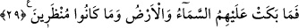

yarılmış olarak sâkin ve açık şekilde kendi hâline bırakmalıdır. Çünkü nefis Firavunu
ve onun sıfatları vahdet denizinde fânî olup şehvet cennetlerini, hayvânî lezzet
pınarlarını, bozuk emel ekinlerini ve rûhânî makamları bunlardan geçerek terk etmek
durumundadır. Bundan başka dünyâ ve âhiretin diğer nîmet ve lezzetlerini de seyr u
sülûk yoluyla yüz çevirerek terk etmelidirler.
Allah Teâlâ’nın “İşte böyle oldu ve biz onları başka bir topluma mîrâs verdik”
kavliyle de şöyle işârî bir mânâ elde edilmektedir: “Rabbânî sıfatların tecellîsiyle her
ne kadar nefsânî sıfatlar fânî oluyorsa da, kalıpta hayâtiyet kaldıkça ondan tekrar nefsânî
sıfatlar doğabilir ve bu rabbânî tecellîlerin yok olmasına dahî sebep olabilir. Şâyet bu
nefsânî sıfatların yeniden doğma durumları olmasaydı, bu mânevî yolda terakkî etmenin
imkânı olmazdı. Bunu iyi anla! Zîrâ bu terakkî sâyesinde sâlik, melekî makamdan
geçmektedir. Çünkü meleğin, bulunduğu makamdan terakkî edip yükselmesi imkânı
yoktur.
Allah Teâlâ şöyle buyuruyor: “Bizden herkesin belli bir makamı vardır” (Saffat,
37/164) Melekî kemâl bir defâlık olup artık bundan başka terakkî olmaz. Beşerî kemâl
ise tedrîcî olup onun seyri dünyâda ve âhirette hiçbir kesintiye uğramaz. Cömertliği bol
bol akıtan Allah Teâlâ’dır.
29. Onlara gök ve yer ağlamadı. Ve kendilerine fırsat da verilmedi.
“Onlara gök ve yer ağlamadı” Bu ifâde onların varlıklarının önemsiz kabûl
edilmesini ve helâk olmaları karşısında keder ve üzüntü duyulmaya değmeyeceklerini
anlatmak üzere mecâz-ı mürseldir. Çünkü bir şeye ağlamanın sebebi, o şeyin varlığına
değer vermektir. Yani burada gök ve yerde istiâre-yi mekniyyeden sonra istiâre-yi
temsîliyye yapılmıştır. Gök ve yer kinâye olarak keder ve üzüntü duyacak birine
benzetilerek istiâre-yi tahyîliyye yoluyla ağlama işi gök ve yere isnâd edilmiştir.
Araplar kıymet ve hatırı yüksek bir kişi ölünce, ona gök ve yer ağladı, derlerdi. Yani,
bu zâtın ölümüyle musîbet bütün herkesi kuşattı ve bu zâta yere ve göğe varana kadar
herkes ağladı, demektir. Bir kişi için de, ona gök ve yer ağlamadı, dediklerinde ise
kıymet ve şeref sahiplerinin ölümünden sonra ortaya çıkan durumun o kişide ortaya
çıkmamasını kasd etmektedirler. Bu ifâdede kendilerinin kaybından dolayı büyük üzüntü
duyularak gök ve yer ona ağladı, denilen kimsenin hâline zıt olan kâfirlerin halleriyle
alay edilmektedir. Bazıları ise ifâdenin mecaz değil, hakîkat olduğunu söylemişlerdir.
Peygamberimiz’in (s.a.) şu buyruğu bu mânâyı teyîd etmektedir. “Her mü’minin gökte
iki kapısı vardır. Bu kapıların birinden o mü’minin rızkı çıkar gelir. Diğerinden ise
mü’minin ameli girip yükselir. Mü’min vefat edince bu kapılar mü’mine ağlayıp
gözyaşı dökerler.” Peygamberimiz (s.a.) buna delil olarak bu âyeti okumuştur.[207] Yani